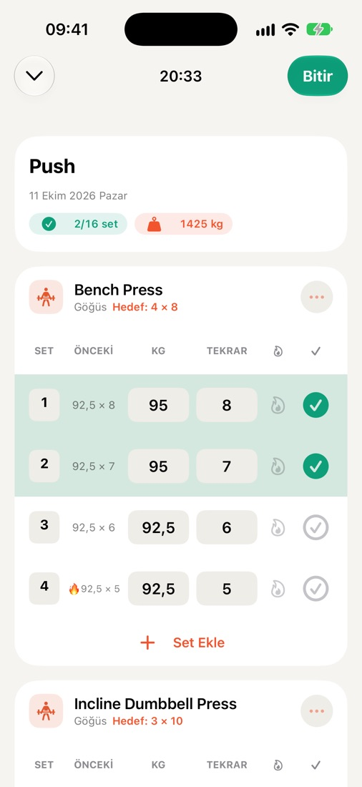
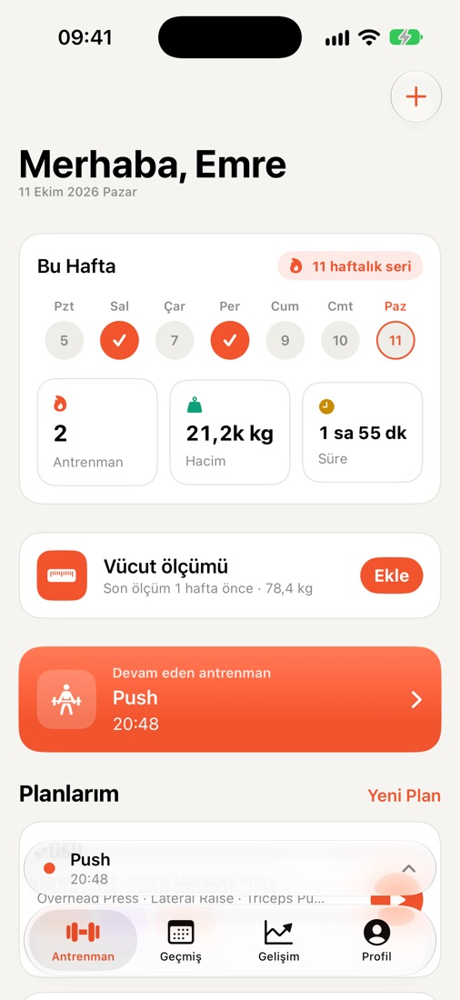
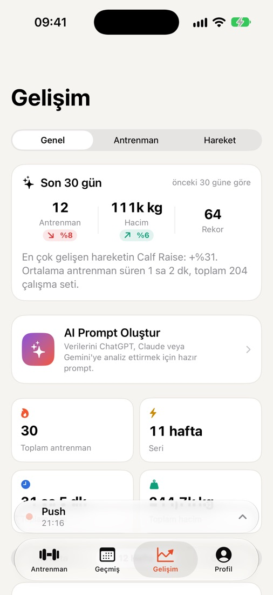
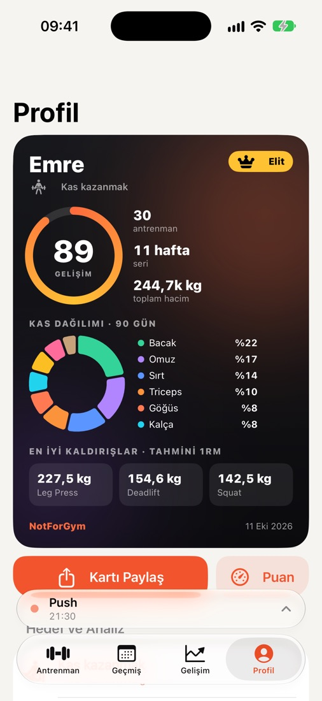
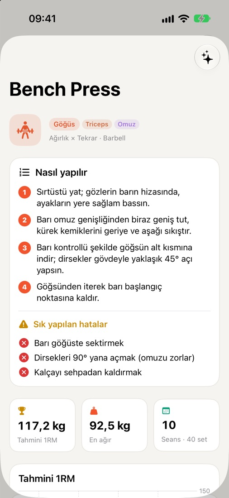
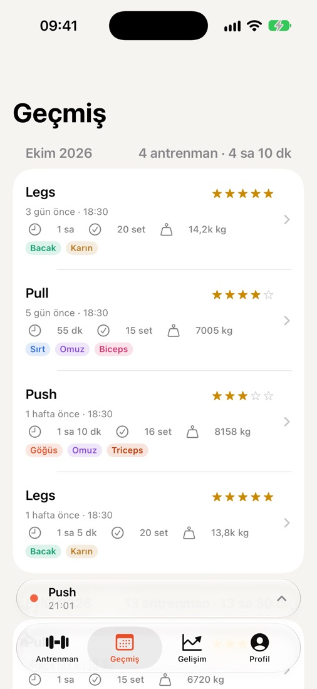

Her seti kaydet.
Her gelişimi gör.
NotForGym, iPhone ve Apple Watch için hızlı ve sade bir antrenman defteri. Her setin yanında geçen seferki değerlerin durur, dinlenme sayacı kilit ekranında çalışır, gelişimin rekorlar ve grafiklerle karşına çıkar. Hesap yok, üyelik yok.

Setler arasındaki o kısa an için yapıldı
Salonda ihtiyacın olan her şey; fazlası değil.
Hızlı set kaydı
Her setin yanında geçen seferki kilo ve tekrar. Isınma seti, tükeniş seti, not ve zorluk tek dokunuşla.
Dinlenme sayacı ve Canlı Etkinlik
Dinlenme geri sayımı kilit ekranında ve Dynamic Island'da. Uygulamayı açmadan seti tamamla ya da dinlenmeyi atla.
Apple Watch
Sıradaki seti gör, saatinden işaretle; dinlenme bitince bileğinde titreşimle haberin olsun.
Gelişim ve rekorlar
Haftalık hacim grafikleri, tahmini 1RM, kişisel rekorlar ve ihmal ettiğin kas gruplarını gösteren dağılım.
250+ egzersiz
Ekipman ve hedef kaslarıyla geniş bir kütüphane; en popüler hareketler için adım adım nasıl yapılır rehberi ve sık yapılan hatalar.
Vücut ölçüleri
Kilonu ve vücut ölçülerini zaman içinde takip et; istersen haftalık hatırlatıcı da kur.
Apple Sağlık
Bitirdiğin antrenmanlar Apple Sağlık'a kaydedilebilir; böylece Etkinlik halkalarına işlenir.
iCloud senkronu
Verilerin kendi özel iCloud alanın üzerinden senkronize olur; uygulamayı yeniden yüklediğinde ya da yeni iPhone'a geçtiğinde geri gelir.
Sporcu kartı ve widget
Gelişim puanın, serin ve en iyi kaldırışlarınla paylaşılabilir bir kart; ana ekran ve kilit ekranı widget'ı olarak da var.
Yapay zekâya hazır özet
Antrenman verilerinden hazır bir istem (prompt) oluştur, kullandığın yapay zekâ asistanına yapıştır.
CSV içe ve dışa aktarma
Verilerin senin. İstediğin an tamamını tablo olarak dışa aktar ya da geri yükle.
8 dil
English, Türkçe, Deutsch, Español, Português (Brasil), Français, Italiano ve 日本語.
Yakından bakış





Ücretsiz. Tüm özellikler.
- Antrenman sırasında asla reklam yok
- Tek satın almayla reklamsız; tüm cihazlarında geri yükle
- Hesap yok, abonelik yok
Antrenmanların sende kalır.
- Kayıt yok, e-posta gerekmez
- Sağlık verileri asla reklam için kullanılmaz
- Tek düğmeyle her şeyi sil